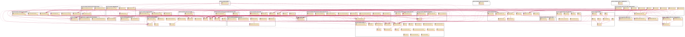

Dependencies¶
This document outlines the dependencies employed in this java project, their purpose within the project, and the licenses associated with them.
Diagrams

{kind=link}
Class Dependency Diagram for Libgdx ATC Simulator
Table of Dependencies
| Dependency | Purpose | License |
|---|---|---|
| libgdx | Used as the opengl and window library for the display | Apache 2 |
| config | Used for parsing the configuration files | Apache 2 |
| gson | Used for serializing/deserializing java objects to json | Apache 2 |
| xchart | Used for graphs in a few of the tests | Apache 2 |
| jocl | Used for the opencl worker implementation | MIT |
| ddogleg | Used for the least squares fitting algorithms | Apache 2 |
| junit | Used for unit testing | Eclipse Public License 1.0 |
| jmh | Used for some performance benchmarks/unit tests. May need removal due to license. | GPL 2.0 |
| pythagoras | Compact vector math library. | Apache 2 |
| protobuf | Used for protocol buffers, network packets. | BSD 2-clause |
| ejml | Efficient Java Matrix Library (EJML), used for matrix operations | Apache 2 |